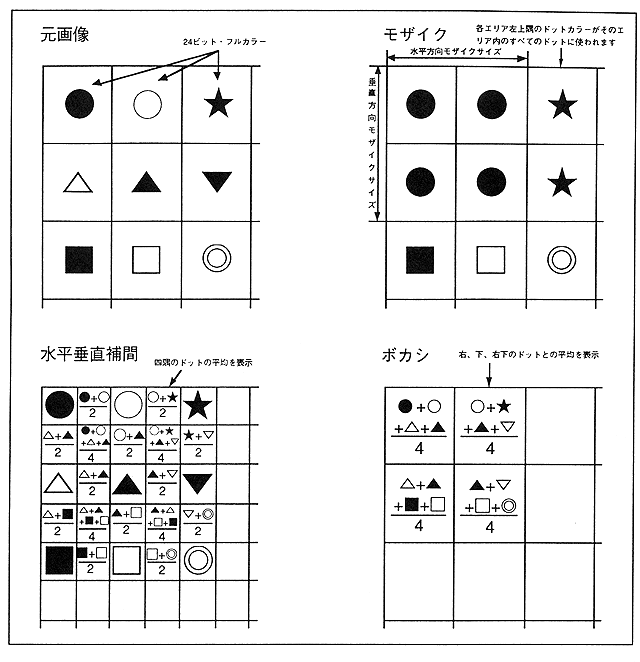

Return to previous page ｜ Return to menu ｜ Go to next page
- Figure 3.32 Interpolation, blur, mosaic function

- Interpolation function
- MPEG playback images are up to 352 x 240 dots, but can be displayed at a resolution of up to 704 x 480 dots by horizontal and vertical interpolation, and can be displayed smoothly with little flicker.
- Bokeh function
- The blur function is a function that displays the average of the color data of 4 dots that are adjacent in the horizontal and vertical directions, and can produce an effect of blurring a distant background.
Return to previous page ｜ Return to menu ｜ Go to next page